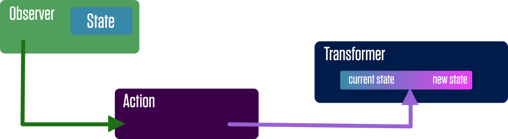

Protonic
A small library for managing application state with streams.
PROTONIC
It's like other things, only different.
Overview
Protonic is a (very) simple (framework agnostic) library for managing state through streams. It's inspired by other popular state-management patterns and libraries (notably Redux, Flux, and RxJS), but makes certain assumptions and trade-offs in support of reducing complexity and developing applications following a specific pattern. By itself, Protonic isn't much of a framework, but is designed to work with a simple one-way data flow pattern that we'll describe here. (This pattern isn't anything new, but for the sake of this document and this particular flavor of the pattern we'll call it the Protonic Pattern.)
Getting Started (Quickly)
To use Protonic in your app, install it with npm:
npm install protonic --save
import Immutable from 'immutable';
import { Stream } from 'protonic';
// To create a stream:
let initialState = Immutable.Map({ name: 'Jessika Pava' })
let myStream = new Stream(initialState);
// To subscribe to a stream:
let subscriber = myStream.subscribe(state => console.log(state.get('name')));
// immediately logs "Jessika Pava"
// To send state to a stream:
myStream.state = myStream.state.set('name', '"Snap" Wexley');
// logs '"Snap" Wexley'
// To unsubscribe from a stream:
subscriber.unsubscribe();
myStream.state = myStream.state.set('name', 'Karé Kun');
// nothing logs.One-Way Data Flow

Terminology
State
State is an Immutable data structure that represents the data needed to render your application. This includes the state of the UI in addition to data that might be retrieved from a database or server.
Streams
A Stream is a canonical source of state for a part of an application. Observers can subscribe to a stream to receive new state when the stream updates. Streams in Protonic are similar to streams in other frameworks (they are actually very similar to BehaviorSubjects in RxJS), but make certain assumptions to simplify things.
- Streams remember the last state emitted.
- Streams won't emit falsey values.
- Streams won't emit a new state if it's content is the same as the current state of the stream.
- Streams don't "complete".
- Streams make their internal state available without needing to subscribe to the stream.
- Streams only work with immutable data.

Transformers
A transformer is a function that gets the current state of a stream, transforms the state into new state, and sends the new state back to the stream.
A transformer is only allowed to operate on state from one stream. It may not affect state outside of itself. Additionally, Only transformers are allowed to change the state of stream.

Actions
Since transformers are each allowed to only transform state from one stream, and are not allowed to have side-effects, actions are what we use to combine state changes across streams, as well as perform side-effects (such as Ajax request to fetch data from a server).
Actions are allowed to call transformers for different streams, but actions may not manipulate streams directly. Since transformers are not technically reducers (they don't receive state as an argument or return state), they cannot be batched together in on atomic state change. This means that a transform of state from one stream should not depend on a transform of state from another stream happening in a particular order.

Funnels
A Funnel is just a special kind of stream that takes other streams as its input. The funnel will combine the state from the other streams into a new state object. The Protonic Pattern is a big believer that there should only be one source of state for UI components to subscribe to. Typically an AppState will be created by Funnel-ing the individual source streams into one state object.
Funnels initialize with an empty Immutable.Map as its value, but won't emit state to observers until all of the source streams have sent state to the Funnel.
Views
A View is another special kind of stream that takes a single stream as input along with a function that computes new state from the state of the source stream.
Since streams only emit new state to observers when the new state is distinct from the current state, views will only emit when the computed state changes. This is a good way to prevent a lot of unnecessary calls to observers when the application state changes.
Wiring Up UI Components
Since the Protonic Pattern is framework agnostic, the specific implementation details will be determined by whichever framework is rendering your interface. (It's also important to note that the pattern isn't limited to an interface being a UI interface.)
Example components
We'll demonstrate an oversimplified example of components in both Angular (1.5, but the concept applies as well to 2.0) and React. In both cases, we'll assume that a stream called AppStream will send the following state:
Immutable.Map({
id: 3,
name: 'Jessika Pava',
callsign: 'Blue Three',
fighter: 'T-70 X-Wing',
affiliation: 'Resistance',
sorties: 18
})Angular 1.5
In an effort to reduce complexity, we aren't using Angular's Dependency Injection here. If you need DI, you can create a service as a wrapper around the stream. Additionally, changes in state won't automatically trigger a digest cycle. An example of how to do with will be provided later on.
import AppStream from 'path/to/app-stream';
import { incrementPilotSortie } from 'path/to/actions';
export default {
template: '... some template ...',
bindings: {},
controller: function(){
let subscriber;
// Initial state.
this.pilot = {
name: '',
callsign: ''
fighter: '',
affiliation: '',
sorties: 0
};
// Lifecycle methods.
// $onInit sets up the state subscriber.
this.$onInit = function () {
subscriber = AppStream.subscribe(state => this.pilot = state.toJS())
}
// $onDestroy cleans up the subscriber
this.$onDestroy = () => {
subscriber.unsubscribe()
}
// A method to be called from the UI
// which in turn calls an action.
this.incrementSortie = () => {
incrementPilotSortie(this.pilot.id);
}
}
}
React
import AppStream from 'path/to/app-stream';
import { incrementPilotSortie } from 'path/to/actions';
export default React.createClass({
getInitialState: function() {
return { pilot:{
name: '',
callsign: ''
fighter: '',
affiliation: '',
sorties: 0
}
}
},
componentDidMount: function() {
this.subscriber = AppStream.subscribe(state => this.setState({ pilot: state.toJS() }));
},
componentWillUnmount: function() {
this.subscriber.unsubscribe();
},
incrementSortie: function() {
incrementPilotSortie(this.state.pilot.id);
},
render: function() {
return ( /*... some jsx ... */ );
}
})API
Streams
A stream is created by calling new Stream() an optionally passing in an initial state. If you do
pass in an initial state, it must be an Immutable data structure.
import { Stream } from 'protonic';
let myStream = new Stream(Immutable.Map({name: 'Testor'}));You can get the current state of a stream at any time by access the .state property.
let currentState = myStream.state;
// currentState is Immutable.Map of {name: 'Testor'}You can subscribe to any changes to the stream's state with the .subscribe method. .subscribe takes a callback function (we'll call it an observer) that is called any time the stream's state changes. .subscribe returns an object with an .unsubscribe method. .unsubscribe should be called whenever the observer is done listening to state changes.
let subscriber = myStream.subscribe(state => console.log(state));
// logs out state anytime state changes.
// later on
subscriber.unsubscribe();You can send new state to the stream with the .next(newState) method. This will send the state to any observers, provided that the new state is not falsey and is distinct from the stream's current state.
myStream.next(Immutable.Map({name: 'Snap'}))
// myStream.state is now Immutable.Map of {name: 'Snap'}Protonic also allows you to set the state through the .state setter property. It is functionally equivalent to calling .next(newState), but might be more declarative:
myStream.state = Immutable.Map({name: 'Snap'});
// myStream.state is now Immutable.Map of {name: 'Snap'}Funnels
A funnel is created with new Funnel() and takes a required argument which is a map of streams to combine into one state object. The key for each stream in the map will end up corresponding to the key for that stream's part of the state in the combined state object.
import { Funnel } from 'protonic';
import pilotStream from 'path/to/pilot-stream';
import shipStream from 'path/to/ship-stream';
let AppStream = new Funnel(Immutable.Map({
Pilots: pilotStream,
Ships: shipStream
}))Just like with Streams, you can get the current state of the Funnel with the .state property.
let currentState = AppStream.state;
// currentState is Immutable.Map of
// { Pilot: { name: 'Testor' },
// Ship: { type: 'X-Wing' } }Also like Streams, you can subscribe to state changes with the .subscribe method. Note that state will not be sent to observers until all of the source streams have emitted state to the funnel.
let subscriber = AppStream.subscribe(state => console.log(state));
// logs out state anytime state changes.
// later on
subscriber.unsubscribe();Finally, when you are done with a Funnel, you can call .destroy method to clean up the Funnel and unsubscribe from the source streams.
AppStream.destroy()Views
A View is created with new View(soureStream, viewFunction), and requires a source stream which it will subscribe to and a view function to change the shape of the state before emitting to its own subscribers.
import { View } from 'protonic';
import AppStream from 'path/to/app-stream';
let myView = new View(AppStream, state => {
let pilotName = state.getIn(['Pilot', 'name']);
let shipType = state.getIn(['Ship', 'type']);
return Immutable.Map({
description: pilotName + ' flies an ' + shipType
});
})As with Streams and Funnels, the current state of a View is accessible by its .state property:
let currentState = myView.state;
// currentState is Immutable.Map of { description: 'Testor flies an X-Wing' }Also like Streams and Funnels, you can subscribe to state changes from the view. Just like Streams, observers will only receive state if the new state calculated by the View is distinct from the last state calculated by the View.
let subscriber = myView.subscribe(state => console.log(state));
// logs out state anytime state changes.
// later on
subscriber.unsubscribe();And, like Funnels, when you are done with a View, it can be cleaned up with the .destroy method.
myView.destroy();Actions and Transformers
TODO Show code examples for actions and transformers
Logging and Debugging
TODO Talk about Logging/Debugging with Stacks.
Why Protonic
TODO Talk more about philosophy of Protonic
TODO Talk about gotchas (i.e. Actions cannot subscribe to streams)